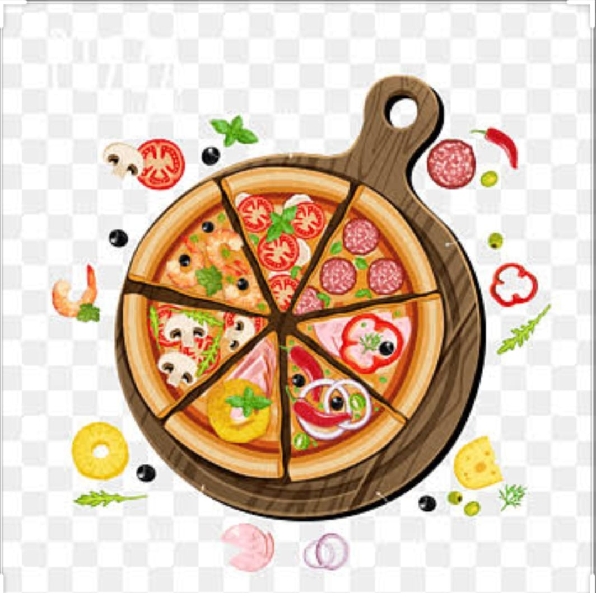
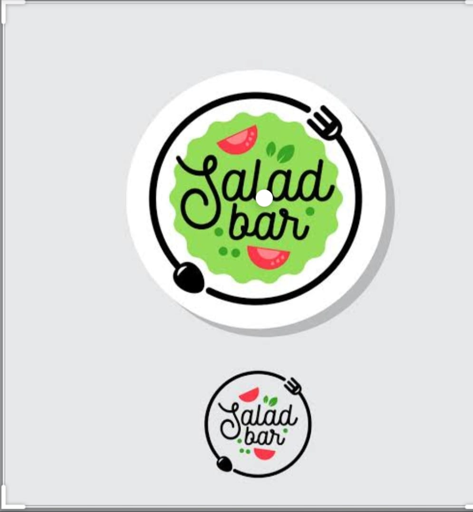
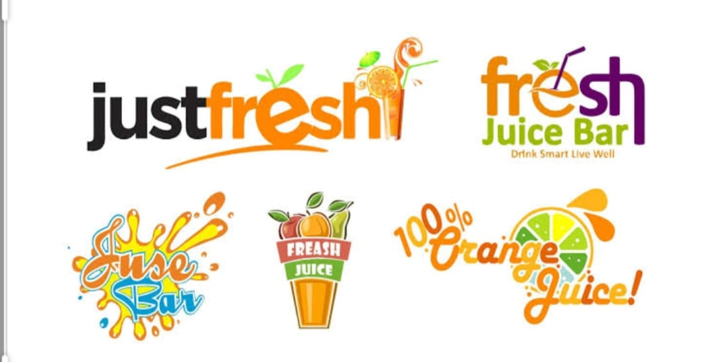

pizza

When people think of healthy food, they often don’t think of pizza. The truth is there are actually some health benefits to eating pizza. And there are plenty of topping and serving options to help it fit into your healthy lifestyle. You can even
create a healthier meal by adding a salad on the side.
Salad

Aside from their natural good taste and great crunchy texture alongside wonderful colors and fragrances, eating a large serving of fresh, raw vegetables each day can have significant health benefits
juice

Everyone loves a cold glass of juice! Apple juice, orange juice, carrot juice – no matter the fruit or vegetable, it’s a refreshing staple in households around the world. What you may not realize, though, is if all the juice you drink is processed
and pre-packaged you may be denying your body nutrients that come from fresh juice.